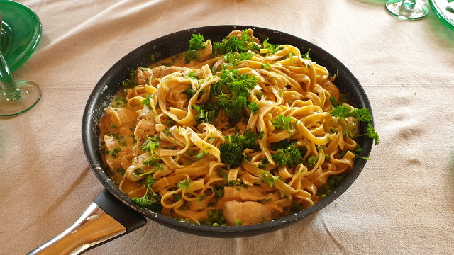

Chicken Alfredo Fettucine
Pasta Dinner
Ingredients
- 2 tablespoons olive oil
- 4 tablespoons unsalted butter
- 2 chicken breasts, cubed
- Salt, to taste
- Pepper, to taste
- 4 cloves garlic, minced
- 2 cups heavy cream
- 2 cups Parmesan cheese
- 1 pound fettuccine pasta, cooked
- 1 handful fresh parsley, chopped
Directions
- In a large skillet, heat oil and add chicken.
- Season chicken with salt and pepper. Brown chicken, then remove from pan.
- Add butter and garlic, cook until fragrant.
- Stir in heavy cream, Parmesan, bring to a simmer.
- Return chicken to pot, and add cooked pasta (al dente). Toss until evenly coated. If the sauce is too thick, add a little pasta water.
- Garnish with additional Parmesan, pepper and parsley.
Notes
Recipe from Tastemade